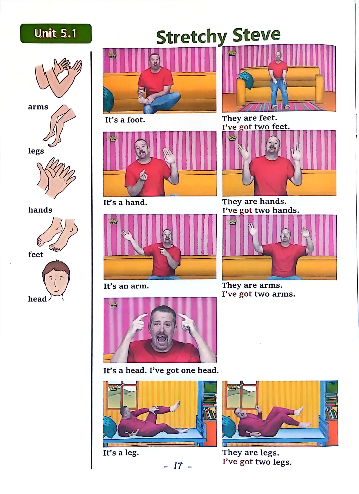

Day 17
Unit 6 · story
教材重点
教材重点依据网盘文件“第四级绿色每日打卡全.pdf”，PDF 第 19 页对应 Day 17；以原图为准，避免对图片文字做不可靠的自动识别。
网盘教材重点原图 · PDF 第 19 页对应 Day 17

Unit 6 · story · 6–7岁
like · say · can · again
Hello, hello, my name's Steve.
台词本为机器转写，可能存在识别误差；不等同于视频逐字原声。
详细内容
Part 1 核心词汇
必须掌握 · 4 个Part 2 跟读句型与句型拓展
左侧保留台词本原句，右侧为替换练习；拓展内容不是视频逐字台词。
Hello, hello, my name's Steve.
It's time to play. It's time to play in English.
Hamburger.
Spaghetti.
Mashed potato salad and pizza, mashed potato, mashed potato, mashed potato.
Part 3 台词本全文
来源：第4级台词本 · 017.Wow!Green - Unit 6 story1.pdf。以下保留网盘 PDF 的机器转写文本，仅清理了文件路径页眉和空行。
Hello, hello, my name's Steve.
It's time to play. It's time to play in English.
Hamburger.
Spaghetti.
Mashed potato salad and pizza, mashed potato, mashed potato, mashed potato.
Potato, maggie, hello, boys and girls, oh, maggie, what are you making.
Mash, potato.
Mashed potato. Wow. She likes mashed potato.
Do you like mashed potato If you do say.
I like mashed potato, I like mashed potato, I like mashed potato.
Very good, but hey Maggie, I've got a pizza, would you like some pizza come on, yeah,
Pizza delicious. Oh, I like pizza.
Hey, do you like pizza? Yeah, then say with me, I like pizza.
I like pizza again. I like pizza, oh, delicious.
I like cheese on my pizza.
What do you like on your pizza? Bash, potato.
Well, I like mashed potato and I like pizza.
But I don't like mashed potato.
On pizza, oh, now I have to go and cook something in the kitchen, oh dear.
Yeah, mashed potato or the pizza. Oh, I'm hungry. What can I cook.
Oh yeah, spaghetti. I like spaghetti delicious.
I just put the spaghetti in the pan, super, hey, I like spaghetti with cheese.
I like spaghetti with tomato, I really like spaghetti. Oh, great, it's finished, super A.
Lots and lots of delicious spaghetti. Great. Oh, hey,
Do you like spaghetti? Yeah, if you do say with me, I like spaghetti.
I like spaghetti, and again, I like spaghetti delicious.
But what should I put on my spaghetti? Um, spaghetti.
Spaghetti and mashed potato, oh, I don't like that.
Do you like spaghetti and mashed potato? No, then say, no, I don't.
No, I don't, and again, no, I don't, ER, I can't eat this.
/
-
/4/017.Wow!Green - Unit 6 story1.txt[2022/3/29
星期二
6:49:29]
But I'm still hungry, who, maybe there's something in my fridge.
Naughty, maggie, oh, she likes mashed potato. She really likes mashed potato. What can I eat.
Oh no, nothing in my fridge. Oh, hey, what's this.
What is it? Yeah, it's a salad, oh, hey,
Do you like salad? Yeah, if you do say I like salad again, I like salad.
If you don't like salad, say I don't like salad again. I don't like salad, but.
This salad is good, hmm, but it needs something on the salad, um, white mush, but I don't.
A oh Maggie salad and mashed potato.
Oh no, maggie likes mashed potato on everything whole.
I'm still hungry. I'm going out to get something to eat. Maggie.
Can I have a hamburger please?
Thank you. Oh, hey, I'm so hungry, but look, I've got a hamburger, hey,
Do you like hamburgers? Yes?
If you do say with me, I like hamburgers, come on, I like hamburgers, and again,
I like hamburgers, oh, delicious, but hey, can you see Maggie.
HA, no, maggie's not here, so I can eat my hamburger. Delicious. Must, I love you.
How you naughty, naughty.
Sorry, bye bye, everybody, see you next time, you don't like mashed potato.